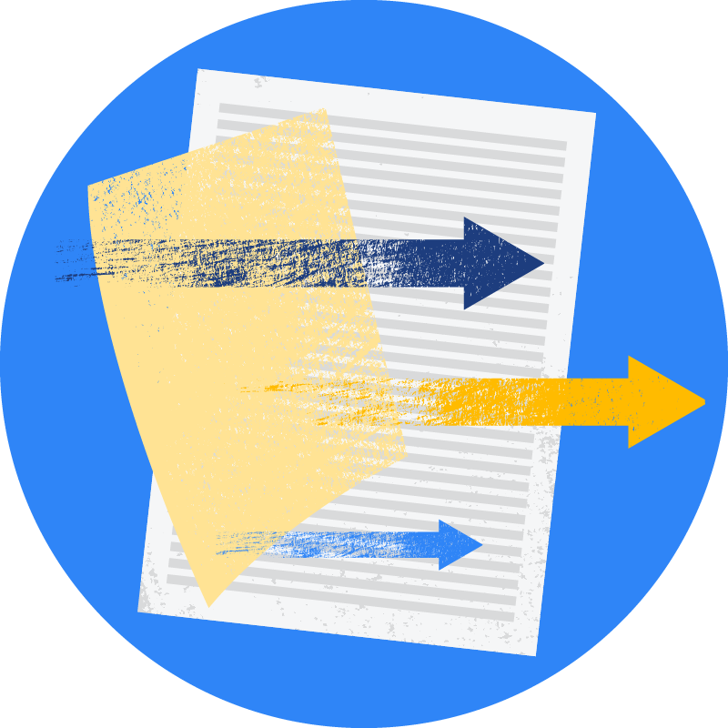
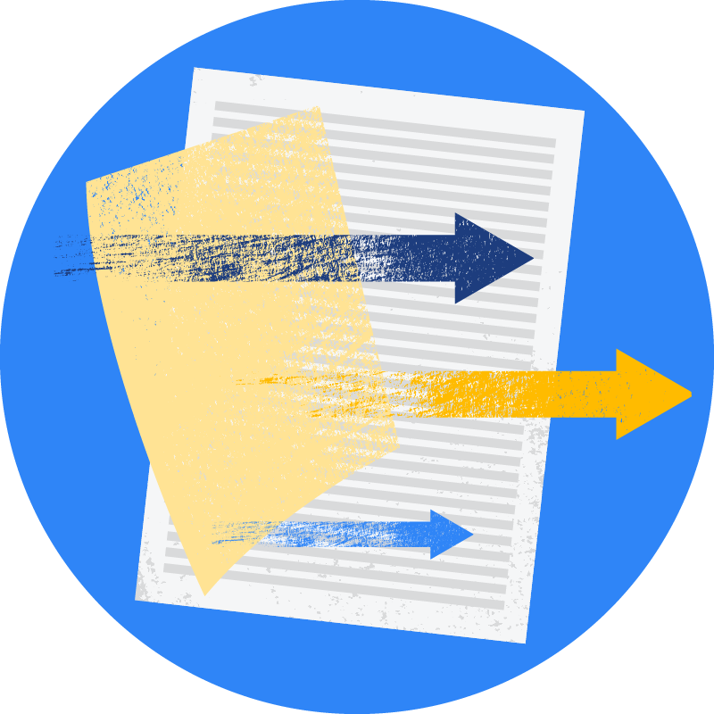

|
Yaowei Hu
Ph.D. Candidate CSCE, University of Arkansas, USA Email: yaoweihu@uark.edu 
 

|
I am a third-year Ph.D candidate in the Department of CSCE at University of Arkansas, advised by Prof. Lu Zhang.
Previously, I received a MSc and a BSc in computer science at Sichuan University, China.
My research areas include: fairness-aware machine learning, causal inference.

Achieving Long-term Fairness in Sequential Decision Making
Yaowei Hu and Lu Zhang
AAAI, Vancouver Canada, 2022
Supplemental | Slides | Poster | Code | BibTex
Yaowei Hu and Lu Zhang
AAAI, Vancouver Canada, 2022
Supplemental | Slides | Poster | Code | BibTex
A Generative Adversarial Framework for Bounding Confounded Causal Effects
Yaowei Hu, Yongkai Wu, Lu Zhang, Xintao Wu
AAAI, Virtual, 2021
Supplemental | Slides | Poster | Code | BibTex
Yaowei Hu, Yongkai Wu, Lu Zhang, Xintao Wu
AAAI, Virtual, 2021
Supplemental | Slides | Poster | Code | BibTex

Fair Multiple Decision Making Through Soft Interventions
Yaowei Hu, Yongkai Wu, Lu Zhang, Xintao Wu
NeurIPS, Virtual, 2020
Supplemental | Slides | Poster | Code | BibTex
Yaowei Hu, Yongkai Wu, Lu Zhang, Xintao Wu
NeurIPS, Virtual, 2020
Supplemental | Slides | Poster | Code | BibTex
| visitor: |